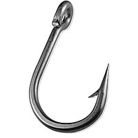
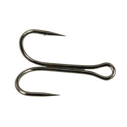
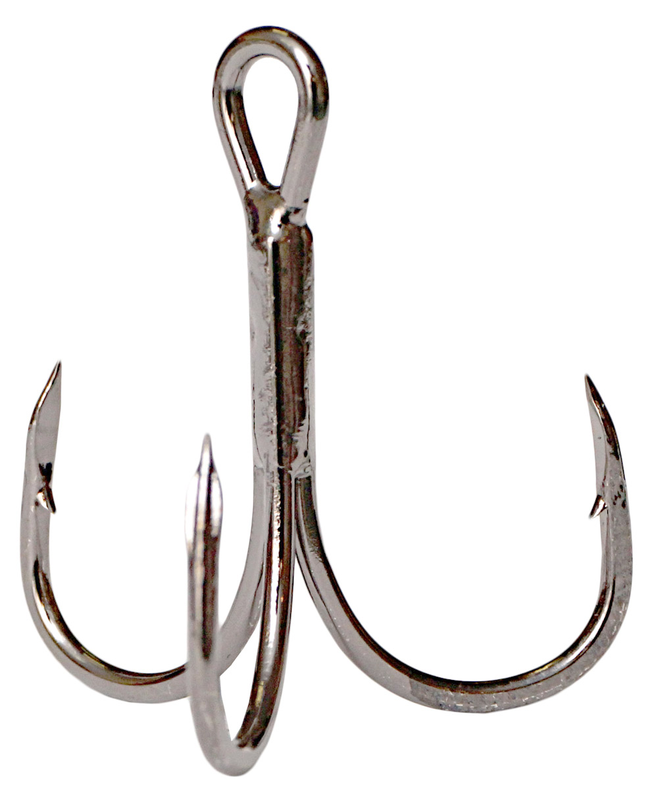

Одинарный
Двойной и Тройной
  
Одинарные крючки считаются универсальными, они используются в большинстве удочек при ловле, как на естественные, так и искусственные насадки.Его необходимо подбирать в зависимости от насадки, которую планируется использовать, а также ротовой полости целевого трофея.
Двойные и тройные модели в основном используются при охоте за хищной рыбой при использовании живца или для оснащения воблеров и блесен.